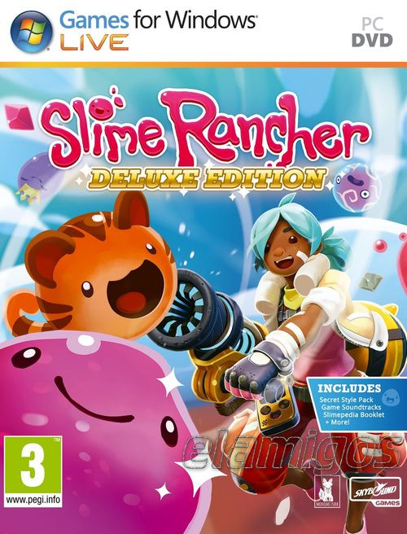

Slime Rancher 645 MB
Género: Sandbox
Slime Rancher es la historia de Beatrix LeBeau, una intrépida y joven ranchera
que se prepara para una vida a mil años luz de la Tierra en la ‘Lejana,
Lejana Pradera’ donde prueba su suerte para ganarse la vida lidiando con
slimes.